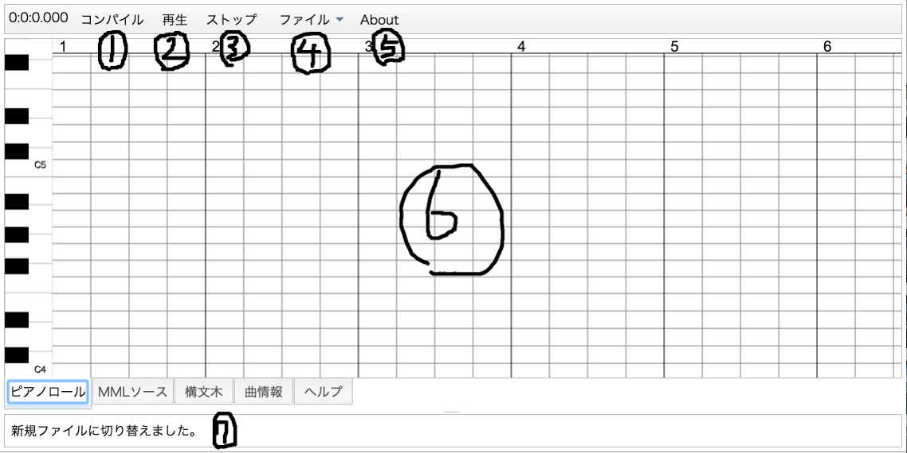

概要
ピコピコシーケンサーへようこそ。
ピコピコシーケンサーは、HTML5をベースとしたFlashを一切使用しないシーケンサーです。肝心な音楽の記譜にはMMLをやや独自拡張した
オリジナル言語を使用し、ピアノロールによるGUIもあります。今のところ未実装ですが、いずれGUIによる編集機能もつく予定です。
名前のとおり、このシーケンサーは基本的にはファミコンやスーファミのような「ピコピコ音」で音楽を作るものです。残念ながら、ピアノなどの
普通シーケンサーという言葉から想像するような音源は用意されていません。（一応、そういう音源を実現する方法は存在するのですが、
困難を極めます）
注意事項
- iPhone5Sなど、古い機種において、音の再生と経過時間が同期しない現象が発生することが確認されています。 一部のユーザ様には、ご迷惑をおかけしますが、何卒ご了承ください。
基本
ピコピコシーケンサーは、MMLをもとに音楽を生成するミュージックシーケンサーです。そのため、ピコピコシーケンサーで音楽を鳴らすためには まずMMLで音楽を記述しなければなりません。各文法要素に関しては後述の文法集を ご参照ください。
インターフェイス

1: コンパイルボタン
現在のMMLソースを解析・コンパイルします。ファイルを開いた直後やMMLソースを変更した場合は、必ずこのボタンを使って曲を再生してください。
2: 再生/一時停止ボタン
すでにコンパイル済みの曲を先頭から再生したり、一時停止したりします。
3: 停止ボタン
曲の再生をやめます。
4: ファイルメニュー
ファイルに関する操作を行うメニューを開きます。
5: 開くボタン
「このプログラムについて」ウインドウを表示します。
6: メイン領域
下に表示されているタブに合わせてピアノロールやソース編集画面が表示されます。
7: ステータスバー
各種ステータスを表示します。曲の再生中には曲頭からの経過時間をtick数で表示します。
簡易MML文法集
周知のとおり、MMLには様々な方言・流派が存在します。同じMMLを使用していると記載されていても、処理系ごとに異なる方言が採用されている ことが多いのが現状です。こちらで紹介するMML文法もあくまでも広く普及している記法のMMLのサブセットの一種であり、ピコピコシーケンサー でしか使用できない方言の一種であることを予めご了承ください。
凡例
- () : 引数をあらわす。一般的なプログラミング言語と違い、MMLソースに記述する際には引数を囲む()はいりません。
また、コマンド名として使える文字のグループもあらわす - [] : 省略可能な箇所をあらわす
- "" : ダブルクォーテーションで囲われた記号はリテラルを意味し、ソース上にその記号をそのままの形で記述しなければならない
- xxx-xxx : アルファベットや数字などの範囲をあらわす
- XXX : 大文字の文字列はコマンド名をあらわす。これはそのままの形でソースに記述しなければならない。
なお、コマンド名の大文字小文字は無視される(XXXと書いてもxxxと書いても同じ意味)
音階・音長
(A-G)([accidentals, step, gate, velocity]) where...
- accidentals = (!#+-) : 臨時記号
- step = 2n(n = 0, 1, 2...) or *0~*32767 : ステップタイム
- gate = 2n(n = 0, 1, 2...) or *0~*32767 : ゲートタイム
- velocity = 0~127 : ベロシティー
音楽を記述する際の基本、音階は音名の英語表記であるアルファベット1文字を使用して表します。具体的には、いわゆる「ド」 の音に"c"、「レ」に"d"...というふうに「ソ」の"g"まではアルファベット順に、「ラ」と「シ」に関しては先頭に戻って "a"と"b"の1文字を割り当てます。
音階をあらわすアルファベット一文字の後に"!","#","+","-"のどれかの記号をつけると臨時記号の付いた音符になります。 これらはそれぞれ"!"がナチュラル、"#"と"+"がシャープ、"-"がフラットを表しており、ひとつの音符に複数つけることもできます。
音符コマンドは追加で計3種類の引数を取ります。一つ目の引数stepはその音符のステップタイムを表し、これは語弊を恐れずに言うならば
その音符の論理的な継続時間を表します。この引数には通常、音楽的な音長を指定します。なお、ステップタイムを省略した場合は、
デフォルトの音長が自動的に設定されます。
音楽的な音長の代わりに絶対的音長(いわゆるtick数)で長さを指定することもできます。この場合、数字の前に"*"(アスタリスク)
を付けます。
数字の後に"^"(サーカムフレックス)をつけることで、楽譜におけるタイのように音長を足し算することができます。
ステップタイムの直後に"."(ドット)をつけることでドットの前の音長の1/2ドットの数ずつだけ音長を伸ばすことができます。
つぎのgate引数は、その音符のゲートタイムを表し、こちらも語弊を恐れずに言うならばその音符の演奏上の継続時間を表します。
最後の引数velocityはベロシティーを表し、MIDIを使用していないピコピコシーケンサーでは、音量と等価です。
例1.
cdef edc /これは全てデフォルト音長で「ドレミファ ミレド」のメロディーになります。
c++++ /d++(=e)と同じ意味
c- /C♭、つまりbのこと
c!
例2.
c /デフォルトの音長
c4 /Cの四分音符
c+8 /Cシャープの八分音符
例3.
c*480 /c4と同じ意味
c*480.. /後述するドットを付加することも可能
例4.
c1^1 /全音符２つ分（二全音符）の長さ
c4^*480^8 /絶対音長指定を挟んでもいい
例5.
c4, 8 /楽譜表記上は四分音符だが、実際の演奏では八分音符の長さになる（いわゆるスタッカート）
c, 8 /このようにも書ける
例6.
c4,,127 /音量最大で発音する
c,,-20 /前の音よりベロシティーを20下げて発音する
休符
R([step]) where...
- step = 2n(n = 0, 1, 2...) or *0~*32767 : ステップタイム
音符と並んで記譜する際の基本となる記号である休符は、"r"一文字で表します。休符コマンドの場合、引数は一つのみで、 その指定方法や意味は、音符の場合のそれと全く同じなので割愛します。
例.
r4 /四分休符
r4.. /4+8+16分休符
r4^8^16 /上の例はこうも書ける
r*480 /もちろん絶対音長での指定も可能
トラックの変更
"("T (number)")"
"["TRACK (number)"]" where...
- number = 1~ : トラックナンバー
新しいトラックの定義を開始します。なお、定義可能なトラック数に特段の上限はありません。
例.
(t1)
[track 2]
調号
"["K.SIGN (key1, key2...)"]" or "["K.SIGN (sign note1, note2...)"]"
"["KEY_SIGNATURE (key1, key2...)"]" or "["KEY_SIGNATURE (sign note1, note2...)"]" where...
- key1, key2... = (+-#)(A-G) : 調号をつける音名とつける調号の種類
- sign = (+-#) : 調号の種類
- note1, note2... = (A-G) : signで指定した調号をつける音名
このコマンド以降の調号を変更します。今のところ、調号をつける音名を一つ一つユーザーが指定しなければなりません。 が、いずれCMajorやEbMajorなどの調名による指定もできるようにする予定です。
最初の音符の説明で出てきたナチュラル記号は、このコマンドと組み合わせて使用します。さらに、"+"や"-"と組み合わせることで ナチュラルと臨時記号の両方を考慮した音程にすることができます。（楽譜の場合には、ナチュラル記号は明示しなくとも、 シャープやフラットをつけるだけで調号の効果を消すことができますが、このMMLにおいては"+"や"-"の記号は実際には、 半音上げ、半音下げを意味するのみで、厳密に言えばシャープやフラットではありません。よって、楽譜と同じように調号の付いた 音階に臨時記号をつける場合には、まずナチュラルを使用して調号の効果を打ち消す必要があります）
例.
[k.sign +c, +f] f! /本来ならFにはシャープがつく調だが、この音符のみ調号を打ち消してFとして演奏する
[k.sign -bea] b- /この調では通常ならBにはフラットが付いているが、更にマイナスを指定しているためB--(=A)として演奏される
(通常ならこの調では使用されないが、ダブルフラットと同じ意味)
オクターブ変更
O(octave) where...
- octave = 1~8 : オクターブ
オクターブを設定します。初期値はO4であり、中央ハは、O4 cに該当します。
またこちらはコマンドではありませんが、<で+1,>で-1だけオクターブを変化させることができます。
例.
o3
o8
o4 c /中央ハを演奏する
o4 < /ここはo5相当になる
音長制御
L(length) where...
- length = 2n(n = 0, 1, 2...) : 音長
デフォルト音長(ステップタイムを省略した時に設定される値)を設定します。初期状態はL4。今のところ、音楽的音長による 実装のみとなっています。
例.
l8
音量設定
V(velocity)
"["VELOCITY (velocity)"]"
U(volume)
"["VOLUME (volume)"]" where...
- velocity, volume = 0~127 : 音量
デフォルトの音量を設定します。通常のMMLに合わせて計4種類の表記法がありますが、全て機能的には等価です。 音符コマンドでベロシティーを省略した場合、このコマンドで設定した値が使用されます。
例.
v127
u127
テンポ設定
T(tempo)
"["TEMPO (tempo)"]" where...
- tempo = 30~300 : テンポ
テンポを設定します。上記の値はあくまで推奨値に過ぎず、この範囲外の値を設定しても、一切エラーは発生しないことに 注意してください。なお、初期値は120です。
例.
t100
t60
音色変更
@(program_number)
"["PROGRAM (program_number)"]" where...
- program_number = 0, 1, 2... : 音色の種類をあらわす番号
演奏に使用する音色を変更します。標準状態では、6種類の音色が用意されています。
| プログラムナンバー | 音色 |
|---|---|
| 0 | 正弦波 |
| 1 | 矩形波 |
| 2 | ノコギリ波 |
| 3 | 三角波 |
| 4 | M字型 |
| 5 | ノイズ |
例.
@0
[program 1]
連符
"{"some MML"}"([step]) where...
- step = 2n(n = 0, 1, 2...) or *0~32767 : ステップタイム
カッコの中に指定したMMLをstepに収まるように演奏します。stepには音符などと同様、音楽的音長の他、絶対的音長や
サーカムフレックスを使用した音長の足し算なども使用できます。
stepを省略するとデフォルト音長が適用される点も普通の音符と同様です。
例.
{cde}4 /いわゆる3連符
{cdef}4.
和音
"""some MML"""([ticks, delay]) where...
- ticks = 0~32767 : 絶対音長による発音時間
- delay = 2n(n = 0, 1, 2...) or *0~32767 : 和音の構成音ごとのディレイ
ダブルクォーテーションでくくった音を和音として同時に発音します。ダブルクォーテーション内では一度のみ音長を指定する ことができます。
例.
"c4eg" /これは四分音符のC, E, Gを構成音とする和音
"ceg"480 /上の例はこうも書ける
"c4eg", 10 /Cの音のあと、10ticksずつずらしてE, Gの音を発音する(いわゆるアルペジオ)
マクロ定義
"["DEFINE macro_name"("[args]")""'"(macro_body)"'""]" where...
- macro_name = 数字、アルファベット、アンダーバーからなる文字列 : マクロの名前
- args = 数字、アルファベット、アンダーバーからなる文字列 : マクロの仮引数名
- macro_body = MMLコード : 置換後のMML
いわゆるマクロです。しかし、C言語のそれとは異なり、単純なテキストプリプロセッサーによる処理ではありません。つまり、 MMLコンパイラーによるセマンティックチェックが行われるという事です。
マクロは引数を取ることもでき、マクロ本体内で"$(仮引数名)"という形で使用することができます。
例.
[define CMajor(l)'"c$(l)eg"'] /コードネームCの和音に置換されるマクロを定義する
マクロ呼び出し
"$""{"(macro_name)[":"(args)]"}" where...
- macro_name = 数字、アルファベット、アンダーバーからなる文字列 : 呼び出すマクロの名前
- args = MMLとして妥当な文字列 : マクロの実引数
上述のマクロ定義で定義したマクロを呼び出します。
実引数は、カンマ区切りで複数指定できます。実引数の数が仮引数の数より少なくても構いません。その場合、指定されなかった 仮引数には空文字列が指定されたことになります。
例.
l8 cded ${CMajor:1} /上述のマクロを引数に1を設定して呼び出した。これは「l8 cded "c1eg"」に展開される
l8 cded ${CMajor}ded8^1 /このように使用することもできる。この場合、「l8 cded "ceg"ded8^1」に展開される
l8 cded ${CMajor:4^8}>c8^2 /これは「l8 cded "c4^8eg">c8^2」に展開される。
このように、マクロの引数にはMMLとして妥当な文字列なら何でも記述できる。ただし、改行を含むことはできない
独自波形定義
"["FUNCTION "("args")""{"(function_body)"}""]" where...
- args = JavaScript上で有効な識別子名 : 関数の仮引数名
- function_body = JavaScriptのコード : JavaScriptで記述された独自波形の生成コード
シーケンサーの音色として使用できる独自波形を生成する関数を定義します。この関数は妥当なJavaScriptコードとして記述する必要があり、 JavaScript側から現在の音符の発音時間を1つ目の引数、発音するべき音の波長を2つ目として呼び出されます。
{}の中にはJavaScriptとして有効なあらゆるコードを記述することができますが、この関数自体がWebWorker上で実行されるため 通常なら参照可能な一部のグローバル変数が使用できない場合があります。
例.
[function (time, freq){return Math.sin(freq * 2 * Math.PI * time);}] /組み込みの正弦波と同じ波形を生成する関数
プログラマブルシンセサイザー
文法集の最後の項にもあったように、ぴこぴこしーけんさーには、独自の波形を定義する機能があります。
これをぴこぴこしーけんさーではプログラマブルシンセサイザーと呼び、その名の通り、プログラミング可能なシンセサイザーです。
プログラマブルシンセサイザーは、JavaScriptの文法で定義できる波形生成装置です。
種明かしをすると、プログラマブルシンセサイザーは、JavaScriptの文法で波形を生成するJavaScript関数です。
ここでは、今すぐに使えそうな関数定義をいくつか紹介します。
独自波形生成の参考にしてみてください。
[function(time, freq){
return Math.sin(2 * Math.PI * time * freq) + 0.3 * Math.sin(2 * Math.PI * time * 2 * freq) + 0.05 * Math.sin(2 * Math.PI * time * 3 * freq); //フルートっぽい
}]
[function(time, freq){
return (Math.sin(2 * Math.PI * time * freq) + 0.1 * Math.sin(2 * Math.PI * time * 2 * freq)) * Math.exp(-time * time); //ギターっぽい
}]
[function(time, freq){
return (Math.sin(2 * Math.PI * time * freq) + 0.4 * Math.sin(2 * Math.PI * time * 2 * freq) + 0.3 * Math.sin(2 * Math.PI * time * 3 * freq) + 0.15 * Math.sin(2 * Math.PI * time * 5 * freq) + 0.3 * Math.sin(2 * Math.PI * time * 7 * freq)) * Math.exp(-2*time); //電子ピアノっぽい
}]
[function(time, freq){
return Math.sin(2 * Math.PI * time * freq) + 0.75 * Math.sin(2 * Math.PI * time * 4 * freq) + 0.1 * Math.sin(2 * Math.PI * time * 8 * freq); //オルガンっぽい
}]